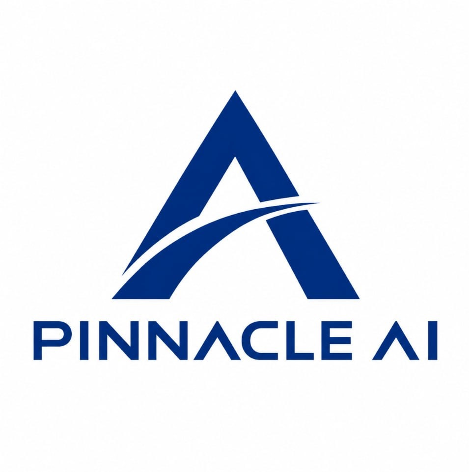
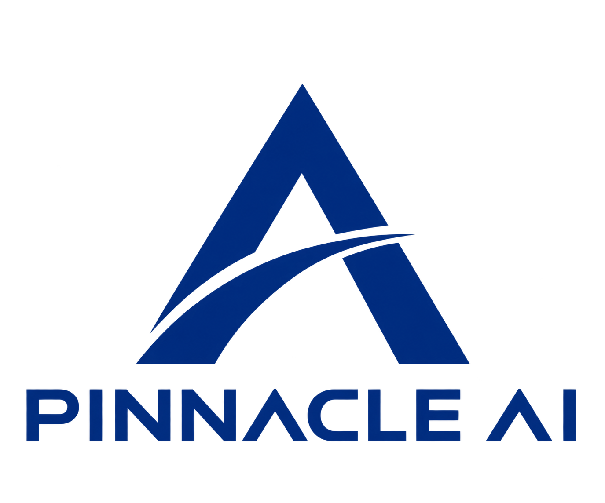

A
資料先於模型
模型的上限受資料品質限制。時間對齊、缺失處理、異常識別、欄位定義與來源版本都應成為研究的一部分，而不是事後補充。
Pinnacle AI 量化投資系統（Pinnacle AI 系統）聚焦於人工智能與量化研究的結合。我們相信，可靠的系統不是取代判斷，而是讓資料、假設、模型與風險之間的關係更容易被理解。
金融市場每天產生大量價格、事件與行為資料。當資訊規模超越人工逐筆處理的能力，AI 能協助完成分類、關聯分析、異常辨識與情境比較。然而，資料量增加並不等於理解自然增加；如果缺乏來源管理、研究假設與風險邊界，再複雜的模型也可能產生看似精確、實際脆弱的結論。
因此，Pinnacle AI 系統把重點放在研究流程本身：資料如何進入系統、模型如何形成輸出、結論在哪些條件下成立，以及研究者如何再次檢查。這套思路讓 AI 成為提升研究廣度與效率的工具，也保留人類對市場背景、制度差異與不確定性的判斷。
每一項原則都指向同一個目標：讓系統輸出可以被理解、檢查與持續改善。
模型的上限受資料品質限制。時間對齊、缺失處理、異常識別、欄位定義與來源版本都應成為研究的一部分，而不是事後補充。
市場故事可能吸引注意，但策略需要經過歷史檢查、樣本外比較與敏感度分析。結論必須由可重現的步驟支撐。
任何潛在機會都應與波動、回撤、流動性與模型失效風險一起檢視，避免把單一績效指標當成完整答案。
AI 擅長規模化計算與模式辨識，人類擅長設定問題、理解制度與評估例外。兩者需要明確分工並互相校正。

系統將研究流程拆分成相互連結、但責任明確的層次。這不僅有助於提升維護效率，也能在結果改變時快速定位原因：是資料更新、特徵漂移、模型參數，還是市場環境發生變化。
明確研究對象、時間尺度、用途與限制，不讓模型替模糊問題製造精確答案。
檢查來源、時間、缺失與偏差，形成可追溯的研究資料集。
比較不同模型、參數與樣本，觀察結果是否對小幅變動過度敏感。
追蹤市場結構、資料特徵與模型行為，必要時重新訓練或調整研究結論。
「真正成熟的量化系統，不只是提供更快的答案，而是讓使用者看見答案如何形成、何時可能失效，以及還有哪些問題值得繼續追問。」
Pinnacle AI 量化投資系統（Pinnacle AI 系統）研究理念量化模型依賴歷史資料與方法假設，無法消除市場不確定性。Pinnacle AI 系統的內容與功能定位為研究與教育參考，不代表獲利保證，也不替代個別使用者的專業判斷。
我們重視對限制條件的說明，包括資料可能延遲、模型可能漂移、回測不代表未來結果，以及不同使用者的風險承受能力並不相同。透明不是列出所有技術名詞，而是讓重要假設與邊界足夠清楚。


在 Insights 中深入理解資料品質、模型驗證、風險管理與人機協作。